zVSAM V2 - Physical structure of the files
This document describes the file structures for implementing zVSAM V2 data sets.
Basic Concepts
Files, Blocks, Records
The logical unit of access or storage is the record. Yet the unit for any given I/O operation is the Block. Block sizes may vary from 512 bytes to 16MB. By default, each block holds up to 255 records. For any given cluster component, choosing an appropriate block size is important. Block size can greatly affect not only performance, but also both internal and external storage consumption.
Every Block and every Record in the file has an XLRA that uniquely identifies it.
Blocks can be chained. Each cluster holds a number of chains. Each chain is a double-linked list connecting blocks of the same type. The chain defines the logical sequence of the blocks.
A cluster consists of one or more files that belong together and should be managed together. Whether you take a backup, perform a restore, or perform other administrative tasks, the files that make up a cluster should be managed alike. When creating a backup copy of a cluster or restoring a cluster, make sure no other processes try to access the data at the same time.
zVSAM implements a number of checks and balances to prevent inadvertent access to data that may have been compromised. Names and locations of files are managed. Tampering with files or file attributes may render the cluster unusable.
As a result, it is not possible to rename a zVSAM cluster or file. Unload and reload your cluster in order to move the data or to assign a different name to a cluster or file.
Just like files in a cluster belong together and should be managed together, clusters in a sphere are logically connected and should be managed together. Again, failing to manage the files in a correct and comprehensive manner may render your data inaccessible.
Data and Indexes
zVSAM clusters consist of one or two components.
ESDS, RRDS, and LDS clusters consist of a data component only. KSDS and AIX clusters have a data component and an additional index component.
The index component holds the primary keys in a tree-like structure. Every primary key is associated with the XLRA of the data record that it represents.
E.g. if a KSDS holds information on cars, the license plate ID could be the primary key. The index component then would hold the license plate IDs, each with the XLRA of the complete record in the data component.
An alternate index cluster - an AIX for short - is used to create an access path to a base cluster, using other information than the primary key to retrieve the data record.
E.g. if a KSDS holds information on cars, an alternate key might be defined on the owner's last name.
An AIX on KSDS or RRDS does not contain XLRAs to the base cluster. Instead, every AIX data record contains a single alternate key value, followed by the primary keys (KSDS), RRNs (RRDS), or XLRA (ESDS) of all data records that have the alternate key value.
E.g. The entry for "Smith" followed by a long list of cars owned by all persons named "Smith".
Every AIX is a KSDS in its own right. The AIX data records that associate each alternate key with their respective primary keys in the bse cluster are stored in the AIX data component. The AIX index component then holds an entry for each AIX data record's primary key (i.e. the base cluster's alternate key value), associated with the XLRA for the AIX data record in the AIX's data component.
Note: the alternate key defined on the base cluster thus becomes the primary key on the AIX cluster.
Cluster types and Cluster Components
Each cluster consists of a data component and (for KSDS and AIX) an index component as follows:
| Cluster type | Index content | Alternate index supported |
|---|---|---|
| ESDS | No index | Yes |
| KSDS | Index on key value | Yes |
| RRDS | No index | In allow mode only |
| LDS | No index | No |
| AIX | Index on alternate key value | No |
[!NOTE] 1. IBM VSAM does not allow an AIX to be defined on an extended-addressability ESDS. zVSAM does not distinguish between standard and extended-addressability clusters. Therefore, even in noallow mode, an AIX can be defined on a large ESDS. 2. IBM VSAM does not allow an AIX to be defined on a reusable cluster. zVSAM - when in allow mode - does allow an AIX to be defined on a reusable cluster. 3. IBM VSAM does not allow an AIX to be defined on a RRDS cluster. zVSAM - when in allow mode - does allow an AIX to be defined on a RRDS cluster.
Record Formats
In zVSAM we support the following record formats:
| Format | Properties |
|---|---|
| F | Fixed. All records have the same length. Records never span a Block boundary. |
| FS | Fixed Spanned. All records have the same length. Records are expected to span a Block boundary. |
| V | Variable. Records have varying lengths. Records never span a Block boundary. |
| VS | Variable Spanned. Records have varying lengths. Records may or may not span a Block boundary. |
- For ESDS, KSDS, and RRDS all record types are supported. Spanned records on RRDS are supported only in allow mode.
- For AIX only F and VS record formats are supported: F for unique, and VS for non-unique indexes.
- For LDS, record type is not defined and not applicable.
Supported Record Formats per Cluster Type:
| Cluster Type | F | FS | V | VS |
|---|---|---|---|---|
| ESDS | Y | Y | Y | Y |
| KSDS | Y | Y | Y | Y |
| RRDS | Y | allow mode | Y | allow mode |
| LDS | N | N | N | N |
| AIX - unique | Y | N | N | N |
| AIX - non-unique | N | N | N | Y |
For a unique AIX each record holds an alternate key value plus the primary key (KSDS), RRN (RRDS), or XLRA (ESDS) of the associated record in the cluster's data component. This fixed configuration dictates a record type of F.
For a non-unique AIX each record holds an alternate key value and as many primary keys (KSDS), RRN (RRDS), or XLRA (ESDS) of associated records in the cluster's data component as there are records holding that specific alternate key value. The table of primary keys may vary in length from 1 to very large numbers. No block size is guaranteed to be large enough to hold the largest possible index record, therefore a record type of VS is mandated. When a non-unique index record needs to be split into segments, no primary key value is ever split; i.e. only an exact number of these reside within a single segment of the record.
[!NOTE] As with IBM VSAM, when an AIX is defined on a cluster that supports spanned records, the key must be defined within the first segment of a record. For zVSAM this restriction holds only in compatibility mode.
Supported Index-types per Cluster Type
| Cluster Type | Primary - Unique | AIX - unique | AIX - Non-unique |
|---|---|---|---|
| ESDS | n/a | Y | Y |
| KSDS | Y | Y | Y |
| RRDS | n/a | allow mode | allow mode |
| LDS | N | N | N |
| AIX | N | N | N |
[!NOTE] 1. IBM VSAM uses an index for RRDS clusters with variable-length records, whether they are segmented or not. In zVSAM no such index is needed. 2. IBM VSAM does not support an AIX to be defined on a RRDS cluster. zVSAM - when in allow mode - does allow an AIX to be defined on any RRDS cluster.
Concept of Fixed-length records stored in blocks
Disregarding block structure elements, F-type records are conceptually stored one after another, filling the block until no space is left. When remaining free space is insufficient to accommodate another record, that free space remains unallocated (marked in blue). The actual implementation is quite different, but we'll leave the implementation details alone for the moment.
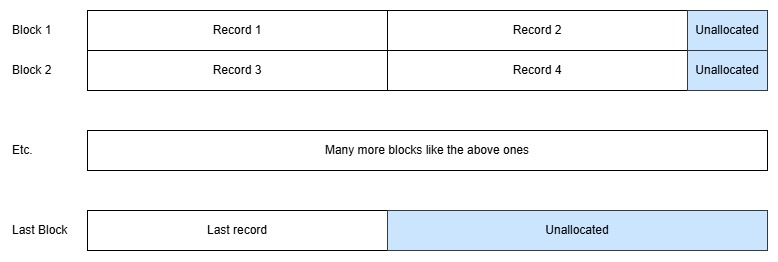
This holds for all cluster types, except LDS. In an LDS there is no block structure, although a prefix block is required, even on an LDS. Each block and each record holds 4096 bytes of data (compatibility mode) or the amount defined by the block size (allow mode).
Below we show an example of records in an LDS:
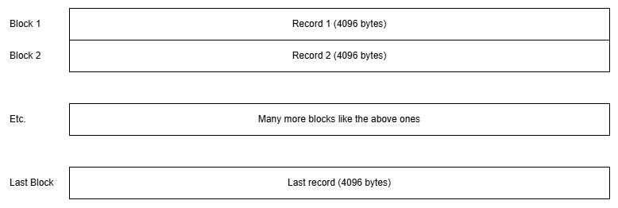
Concept of Fixed-length Segmented records stored in blocks
Disregarding block structure elements, FS-type records are conceptually stored one after another, using a block for each segment and starting each record on a new block. Record size is expected to exceed block size, so the record is split into segments, the first segment is created to fill an entire block, and the rest of the record goes into subsequent segments, which are stored on the next blocks. Each segment is preceded by a Segment Prefix (SPX, marked in yellow). Depending on record size and usable block size, more than two segments may be needed to store the record. The actual implementation is quite different, but we'll leave the implementation details alone for the moment.
Below we show an example where each record requires three blocks and is therefore split into three segments:
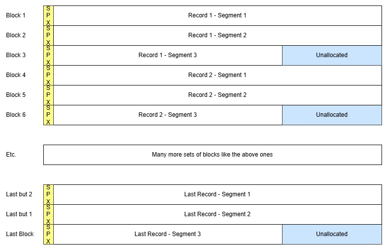
Concept of Variable-length records stored in blocks
Disregarding block structure elements, V-type records are conceptually stored one after another, filling the block until no space is left. When remaining free space is insufficient to accommodate another record, that free space remains unallocated (marked in blue). Every record is preceded by a Record Length Field (RLF, marked in grey). The actual implementation is quite different, but we'll leave the implementation details alone for the moment.
Below we show an example showing how various numbers of records might fit into the blocks of the file:
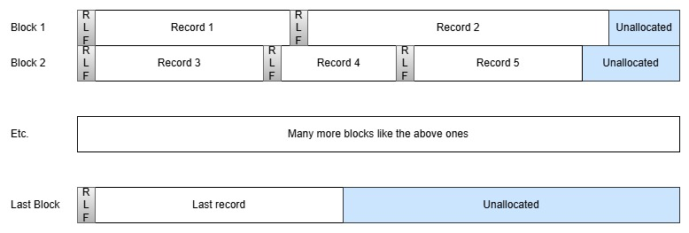
Concept of Variable-length Segmented records stored in blocks
Disregarding block structure elements, VS-type records are conceptually stored one after another, filling the block until no space is left. Every record is preceded by a Record Length Field (RLF, marked in grey). When remaining free space is insufficient to accommodate a complete record, the record is placed on the next block. Only if the record size exceeds usable block size, the record is split into segments and each segment is prefixed with a Segment Prefix. The first segment is created to fill a block and the rest of the record goes into subsequent segments, which are stored on the next blocks. Each segment is preceded by a Segment Prefix (SPX, marked in yellow). Please note that the RLF occurs only once in each record, whereas each record segment has its own SPX.
Depending on record size and usable block size, more than two segments may be needed to store a record. The actual implementation is quite different, but we'll leave those details alone for the moment.
Below we show an example showing how various numbers of records might fit into the blocks of the file, or how a single record might occupy multiple blocks of the file:
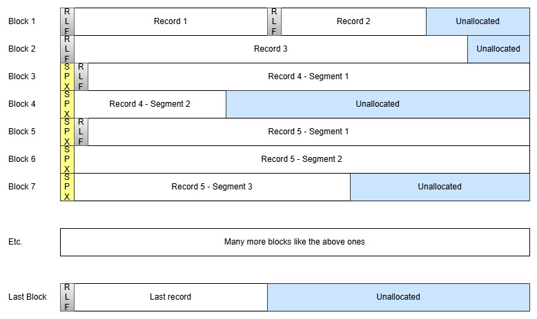
File Structure
The rest of this document explains: 1. how clusters are built from files 2. how files are built from Blocks 3. how Blocks are constructed from structure elements
Physical files
All zVSAM data is stored in physical files, as defined to the operating system. Each component consists of one or more files. The files are formatted as zVSAM files, the structure of which is explained in the next set of chapters.
[!NOTE] the hosting operating system may impose a limit on physical file size and not every host OS supports a physical file spanning a volume boundary of the storage device(s). Therefore, to support clusters that exceed the maximum size of a single physical file, zVSAM is designed to support clusters that consist of multiple files.
Structure of physical files
Every zVSAM file has a block size. The block being the basic unit of I/O. The first block of every file is the prefix block, which is always 4096 bytes in size. The prefix block holds information about the cluster, its data, and its structure.
Data in the prefix block are not accessible to user programs.
However, selected fields in the prefix block can be queried using a SHOWCB ACB= request.
All other blocks in the file have a user-defined blocksize. That is, the user defines the blocksize:
DATABLOCKSIZE= for blocks in a data component and INDEXBLOCKSIZE= for blocks in an index component.
All blocks in the file are created with that size, except the prefix block which is always 4096 bytes,
irrespective of the size of the other blocks in the file.
The file is assumed to logically begin with the first block after the prefix block.
There are 7 types of blocks that may occur in zVSAM files:
- Prefix block – one for each physical file, being the first 4096 bytes of every file
- Spacemap block – used to manage free space in the file
- Data block – used to hold user data, or AIX data records (in an AIX only)
- Segment block - used to hold the segments that make up a segmented record
- Index block – used to hold index information
- Free block - used to hold free space
- Raw block – used to hold a block's worth of LDS data
Every block, except raw blocks, has an internal structure consisting of a block header, a block body and a block footer. The block header and footer have a fixed structure. The content of the block body differs by block type.
- for a Prefix block, the block body contains the prefix area, the counters area, and possibly a RRN translation map and free space
- for a Spacemap block, the block body contains the spacemap data
- for a Data block, the block body contains a variable-length list of record pointers, data records, and possibly free space
- for a Segment block, the block body contains a single Segment and possibly free space
- for an Index block, the block body contains a variable-length list of record pointers, index entries, and possibly free space
- for a Free block, the block body is all free space
- for a Raw block, the entire block is data, no footer, no header, no chains
Raw blocks have no internal structure, as far as zVSAM is concerned. Any and all internal structure(s) in an LDS are to be maintained by the application program. Each of the 7 block types is explained in more detail below.
Not all block types occur in all file types. The relation is as follows:
| File Type | Prefix | Spacemap | Data | Segment | Index | Free | Raw |
|---|---|---|---|---|---|---|---|
| ESDS | Y | Y | Y | Opt | N | allow mode | N |
| KSDS-data | Y | Y | Y | Opt | N | Opt | N |
| KSDS-index | Y | Y | N | N | Y | Opt | N |
| RRDS | Y | Y | Y | Opt | N | Opt | N |
| LDS | Y | N | N | N | N | N | Y |
| AIX-data | Y | Y | Y | Opt | N | Opt | N |
| AIX-index | Y | Y | N | N | Y | Opt | N |
[!NOTE] 1. IBM VSAM does not support free blocks in an ESDS, or an RRDS with Fixed records. zVSAM - when in allow mode - does support free blocks on ESDS and all types of RRDS clusters. 2. Free blocks are not required, but may optionally occur in the indicated cluster components. 3. Segment blocks are not required, but may optionally occur in the indicated cluster components, when the record type is Spanned. 4. Free blocks are not on any chain. The block header's chain info is invalid by definition. Free blocks can be found through spacemap blocks only. 5. Raw blocks are not on any chain. The blocks have neither header nor footer. Raw blocks exist from block nr 0 up to the high-allocated XLRA registered in the prefix block (
PFXHXLRA).
The following table summarizes the way that blocks in the file are chained from the prefix block. Please note that the Prefix block does not reside on any chain.
| Block Type | Begin of chain | End of chain | Notes |
|---|---|---|---|
| Prefix | foxes | foxes | Always at start of file |
| Spacemap | PFXBMAP |
PFXEMAP |
Spacemap chain |
| Data | PFXBDATA |
PFXEDATA |
Main data chain |
| Data | PFXBOVFL |
PFXEOVFL |
Overflow data chain |
| Segment | PFXBSEGM |
PFXESEGM |
Segment chain |
| Index | PFXBLVLn |
PFXELVLn |
up to 16 index chains |
| Free | n/a | n/a | Spacemap-governed |
| Raw | n/a | n/a | 0 - PFXHXLRA |
The spacemap chain is an ordered chain - when a file grows and needs an additional spacemap block, that block is inserted at the end of the chain.
Data blocks normally reside on the data chain, which is an ordered chain that defines the logical sequence of blocks within the cluster.
When a block is unable to hold all the record data 1 or more of the records are each replaced by a Displaced Record Pointer (DRP) which contains the XLRA of that record's actual location: 1. When the record is segmented, the segment blocks are on the segment chain and that chain defines the logical sequence of the record's segments. 2. When the record is not segmented, the data block containing the displaced record is put on the overflow chain. The overflow chain does not define a logical sequence, the sequence is still defined by the data chain, and the DRP's logical position on the data block.
The segment chain is partially ordered. It does define the sequence of blocks belonging to a single record. But it does not define an ordering between the records. The order of records is defined by the data chain, and the logical position of each record or DRP on the data block.
For index blocks, there are 16 levels of index - the n in
PFXBLVLn and PFXELVLn ranges from 0 through F.
Each index chain is an ordered chain that defines the logical sequence of
the index block at that level. Each index entry in an index block holds a pointer
to a block in the next (lower) index level.
When a free block is allocated it is inserted into the appropriate chain. When a block is freed, it is removed from its chain.
Free blocks have a block header, but are not on any chain. When a block is freed, it is removed from its chain, but its chain information is not overwritten; instead it is defined to be meaningless.
Raw blocks have no block header and cannot store chain information.
[!NOTE] When a free block is allocated, it is inserted into the appropriate chain (if any). When an allocated block is freed, it is removed from its chain. Raw blocks cannot be freed.
Components of a Block
With the exception of Raw Blocks, all blocks have internal structure elements, such as: - a Block Header - a Block Footer - a Record Pointer List - data records - free space
All Blocks (except Prefix Block, Free Blocks and Raw Blocks) are chained into a chain which is anchored in the Prefix Block. The type of Block determines on which chain it resides: - Spacemap Chain - Data Chain (data blocks only, not segment blocks) - Overflow Chain (data blocks only - for records represented by a DRP) - Segment chain (segment blocks only, not data blocks) - Index chains (one chain for each index level)
Every Block (except Raw Blocks) has a header holding information to implement the applicable chain. Every Block (except Raw Blocks) also has a footer, which mainly serves to guard integrity of the data stored on the Data Block.
Not all structure elements occur in all Block types. The relation is as follows:
| Structure Element | Prefix | Spacemap | Data | Segment | Index | Free | Raw |
|---|---|---|---|---|---|---|---|
| Block Header | Y | Y | Y | Y | Y | Y | N |
| Block Footer | Y | Y | Y | Y | Y | Y | N |
| Record Pointer List | N | N | Y | N | Y | N | N |
| Record data | N | N | Y | Y | N | N | Y |
| DRP | N | N | Y | N | N | N | N |
| Free Space | Opt | N | Opt | Opt | Opt | Y | N |
| Prefix Area | Y | N | N | N | N | N | N |
| Counters Area | Y | N | N | N | N | N | N |
| RRN map | RRDS | N | N | N | N | N | N |
| Spacemap | N | Y | N | N | N | N | N |
Notes:
1. Opt indicates that Free Space is an optional element on the indicated block type.
2. An RRN map is present in the Prefix Block of a RRDS cluster only.
3. The record data area may contain records and Displaced Record Pointers.
Displaced Record Pointers may be created: - when a record is lengthened such that it no longer fits on the block - when a spanned record, too large to fit on a single block, is created - when a KSDS block needs to be split, zVSAM decides whether to create Displaced Record Pointers, or to assign changed XLRA values to the records being moved to another block.
ESDS Data Organization
An ESDS consists of a Prefix block and a Spacemap block followed by Data blocks and Segment blocks as needed. When the file grows additional Spacemap blocks are added when needed. Not only block transitions, but also the presence of additional Spacemap blocks cause gaps in the XLRA sequence.
Segment blocks and Free blocks are not required, but may be present in the file.
Although records in an ESDS are written sequentially, an overflow data block can be created when: - an update lengthens a variable-length record to exceed block capacity. The excess data is placed on an overflow data block.
Segment blocks are created when: - in an FS-type or VS-type ESDS a record is written that exceeds the capacity of its containing block. - in a VS-type ESDS a record is lengthened causing it to exceed the capacity of its containing block.
Free blocks are created when: - a segmented record is deleted; deletion is possible only in allow mode. - data on an overflow data block is shortened or deleted; deletion is possible only in allow mode.
The following figure shows a contrived example of how the different types of blocks might sit in the physical file:
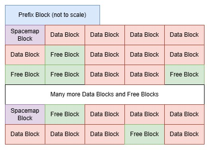
Data Block Chain Organization for unspanned records
Assume we have a cluster with three data blocks holding unsegmented records. The blocks are on the data chain as outlined in the picture below. Please note that all depicted pointers are block pointers. Each pointer thus originates with the indicated field, and ends at the block it points to. The location where the arrows attach has no meaning since it's a block pointer.
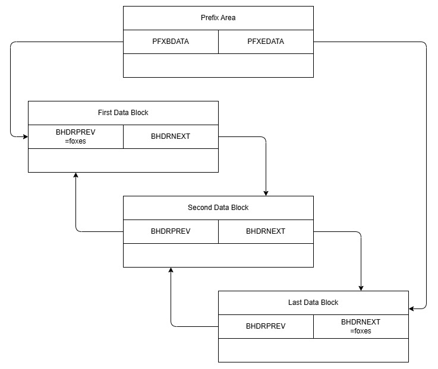
Note: the structure of the Data Chain is the same for ESDS, KSDS data component, RRDS, and AIX data component.
[!NOTE] The chain of spacemap blocks is structurally identical to the data block chain for unspanned records. It is anchored on the prefix area's
PFXBMAPandPFXEMAPfields.
Data Block Chain Organization for spanned records
Now suppose we have a cluster with two data blocks, the first block holding two unsegmented records, the second block holding DRPs for two segmented records, and another unsegmented record. One DRP represents a record consisting of three segments and the other DRP represents a record consisting of two segments.
In the picture we show the data chain as a solid line (as in the picture above), we show the segment chain as a dotted line, and we show the DRP pointers as a fat solid line.
The picture shows the prefix area's pointer to start/end block of both the data chain and the segment chain. It also shows the first and second block on each chain pointing to one another. Same thing for the second and third block on each chain.
The picture also shows that the SPX occurs on each segment block, whereas the RLF only occurs on the first segment of each segmented record.
All depicted pointers are block pointers. Each pointer originates with the indicated field, and ends at the block it points to. The location where the arrows attach has no meaning since it's a block pointer.
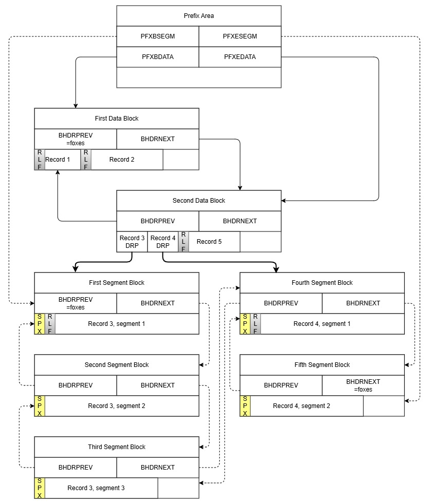
Note: the structure of the Data Chain and Segment chain is the same for ESDS, KSDS data component, RRDS, and AIX data component.
KSDS Data Organization
A KSDS data component consists of a Prefix block and a Spacemap block followed by Data blocks and Segment blocks as needed. When the file grows additional Spacemap blocks are added when needed. Not only block transitions, but also the presence of additional Spacemap blocks cause gaps in the XLRA sequence.
Segment blocks and Free blocks are not required, but may be present in the file.
Data records are written on the data block where they logically belong. A data block is split when: - a record is added that does not fit on the block - a variable-length record is updated so that it no longer fits on the block - a record must be added, but the record pointer list is exhausted; that is: no valid XLRA value is available on the block
Segment blocks are created when: - in an FS-type or VS-type KSDS a record is written that exceeds the capacity of its containing block. - in a VS-type KSDS a record is lengthened causing it to exceed the capacity of its containing block.
Free blocks are created when: - a segmented record is deleted - all data on a data block is deleted
The following figure shows a contrived example of how the different types of blocks might sit in the physical file:
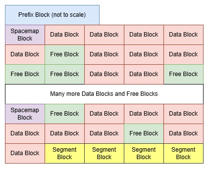
Data Block Chain Organization for a KSDS is no different than it is for an ESDS, RRDS, or AIX data component. Please see Data Block Chain Organization for unspanned records and Data Block Chain Organization for spanned records above.
KSDS Index Organization
A KSDS index component consists of a Prefix block and a Spacemap block followed by Index blocks. When the file grows additional Spacemap blocks are added when needed.
Free blocks are not required, but may be present in the file.
Index entries are written on the index block where they logically belong. A KSDS index never contains segment blocks; an index must be defined with a block size that is large enough to hold at least 1 index entry in its entirety.
An index block is split into two index blocks (but never into segments) when: - an entry is added that does not fit on the block - an entry must be added, but the record pointer list is exhausted; that is: no valid XLRA value is available on the block
Free blocks are created when: - deletion of a data record causes the number of index entries on an index block to drop to zero.
The following figure shows a contrived example of how the different types of blocks might sit in the physical file:
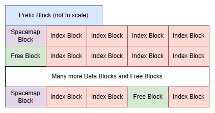
RRDS Data Organization
A RRDS data component consists of a Prefix block and a Spacemap block followed by Data blocks and possibly Segment blocks as needed. When the file grows additional Spacemap blocks are added when needed. Not only block transitions, but also the presence of additional Spacemap blocks and/or Segment blocks cause gaps in the XLRA sequence.
Segment blocks and Free blocks are not required, but may be present in the file.
Data blocks are created when: - a record is written with an RRN that exceeds the highest allocated RRN. As many data blocks with empty slots are created as needed to create all slots in between the highest allocated RRN and the record to be added. If the record to be written does not occupy the last slot on the block, the block is padded with additional empty slots.
Although records in an RRDS are written to pre-allocated slots, an overflow data block can be created when: - an update lengthens a variable-length record to exceed block capacity. The excess data is placed on an overflow data block.
Segment blocks are created when: - in an FS-type or VS-type RRDS a record is written that exceeds the capacity of its containing block. - in a VS-type RRDS a record is lengthened causing it to exceed the capacity of its containing block.
Free blocks are created when: - a segmented record is deleted or shortened enough to require fewer blocks than before the update. - the last record on an overflow block is deleted or moved off the overflow block.
An RRDS block contains slots; each slot corresponds to a unique RRN and a unique XLRA. The relation is maintained in the prefix block, which holds a range-based translation table. Slots can either hold a record, or they can be empty.
When a slot is empty:
- the RPTR still points to the slot, but its RPTR_MTY bit is set on.
- For V or VS record types, the RLF will still be valid for the slot, with a length of 4 (length of the RLF without record data).
- For F or FS record types, the slot will be filled with zeros.
- No DRP can exist on an empty slot.
The following figure shows a contrived example of how the different types of blocks might sit in the physical file:
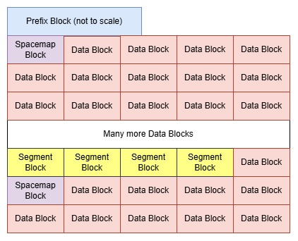
[!NOTE] The prefix block contains control information for mapping a record's RRN to its XLRA.
Data Block Chain Organization for a RRDS is no different than it is for an ESDS, KSDS data component, or AIX data component. Please see Data Block Chain Organization for unspanned records and Data Block Chain Organization for spanned records above.
AIX Data Organization
AIX data records for a Unique Alternate Index have fixed-length records. The AIX cluster is mostly treated as a KSDS with a record type of F.
Each record contains a unique key and its associated primary key value. Only when the AIX is opened as a path, will zVSAM use the AIX data to retrieve records from the underlying base cluster.
AIX data records for a Non-Unique Alternate Index have variable-length segmented records. The AIX cluster is mostly treated as a KSDS with a record type of VS.
Each record contains a unique key and all its associated primary key values. zVSAM stores the index entries within the record in ascending order of key value. For an ESDS the primary key value is the record's XLRA; for an RRDS it is the record's RRN.
Only when the AIX is opened as a path, will zVSAM use the AIX data to retrieve records from the underlying base cluster.
AIX records have the following formats:
| AIX on | Record Content for Unique index | Record Content for Non-Unique index |
|---|---|---|
| ESDS | AIX key followed by XLRA | AIX key followed by count and 1 or more XLRA values |
| KSDS | AIX key followed by primary key | AIX key followed by count and 1 or more primary keys |
| RRDS | AIX key followed by RRN | AIX key followed by count and 1 or more RRN values |
| LDS | not supported | not supported |
| AIX | not supported | not supported |
How the different types of blocks might sit in the physical file is the same as for a KSDS data component. Please see KSDS Data Organization for a graphical example.
Data Block Chain Organization for an AIX data component is no different than it is for an ESDS, KSDS data component, or RRDS. Please see Data Block Chain Organization for unspanned records and Data Block Chain Organization for spanned records above.
AIX records for a Unique index are never split into segments; the AIX data component must be defined with a block size that is large enough to hold at least 1 index entry in its entirety.
AIX records for a Non-Unique index on the other hand, will be split into segments if they grow beyond the capacity of a single block. When creating segments, the segmentation of an AIX record always occurs at an element boundary. The AIX data component must still be defined with a block size that is large enough to hold at least 1 index entry in its entirety.
[!NOTE] Segmented data records always fill all segment blocks, except when the last segment does not need all the space on the block. Segmented AIX records, being split at an entry boundary, may leave empty space in non-last segment blocks as well. Deletion of an index entry in a segmented AIX record may cause additional free space to occur on the segment block. There can never be any free space in the middle of a segment. When an index entry is removed, the entire tail of the segment is moved to shorten the segment.
AIX Index Organization
The index component of an AIX is organized exactly the same way as the index component of a KSDS.
Please see KSDS Index Organization for a graphical example of how blocks may sit in the file and for diagrams showing how the index chains are organized.
LDS Data Organization
An LDS consists of a Prefix block and as many Raw blocks as needed.
An LDS contains no spacemap, therefore blocks cannot be freed. Also, raw blocks contain no block headers or footers, therefore they cannot be chained. Essentially an LDS has no structure - it is just a long series of sequential blocks holding data whose structure is not defined to zVSAM.
The following figure shows an example of how the blocks might sit in the physical file:
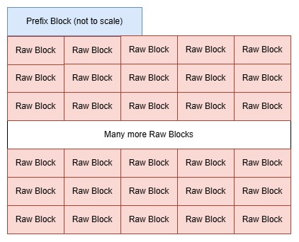
[!NOTE] The prefix block contains control information for mapping a record's logical address to its XLRA.
ESDS Fixed non-Spanned
The records are stored one after another, filling the block until no space is left.
When the remaining free space is insufficient to accommodate another record, that free space remains
unusable. Unusable space can be eliminated by building the dataset with DATAADJUST=YES.
Format:
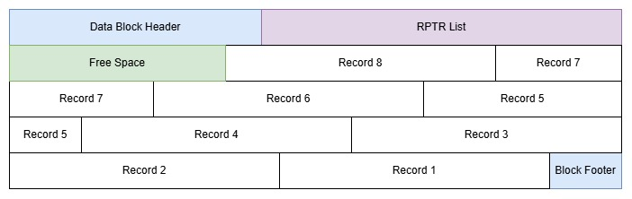
What the diagram shows: - block header and block footer in blue at beginning and end of block - RPTR list in violet following the block header immediately - records in white, allocated from the block footer towards the lower end of the block - leftover free space in green filling the area between the RPTR list and the records - remaining free space is not enough to accommodate another record; the block is full and the free space is unusable - elements are not to scale; yet all records are shown equal in size
[!NOTE] Records never appear out-of-sequence on the block. The logical sequence of the records and slots is defined both by the RPTR list, and by their physical order within the block.
[!NOTE] The format of an ESDS block with Fixed records is identical to that for a KSDS. The only difference being that free-space (
DATAFREESPACE=nn) does not apply to ESDS datasets.
| Function | Notes |
|---|---|
| Add | Yes, but only to the end of the dataset |
| Update | Yes |
| Delete | allow mode only |
| Length change | n/a |
| Access by | Sequence, XLRA, or AIX key |
ESDS Fixed Spanned
If record length is small enough to make each record fit on a block, the spanned attribute is effectively ignored and the cluster's internal organization is identical to that of an ESDS with Fixed Non-Spanned records. The record length being Fixed, this will hold either for all records, or for none of them.
Assuming the record length is such that a record cannot be stored in its entirety within a single Data Block, each record will be represented by a Displaced Record Pointer (DRP). The DRPs are stored one after another in the data block.
The record's data content is split into segments; each segment is prefixed with a Segment Prefix (SPX). Each segment plus its SPX is made to exactly fill an entire segment block, except the last one. Remaining free space is usable only for extending the record; no other record data can be placed in the free space area of a segment block.
The segment blocks are chained in sequence onto the segment chain. The DRP points to the first segment block of the record.
zVSAM extension: in allow mode an alternate key need not be in the first segment.
Below we show an example where each record requires two segments:
What the diagram shows: - a single data block with: - block header and block footer in blue at beginning and end of the block - RPTR list in violet following the block header immediately on the data block - DRPs in white on the data block. DRPs are small, hence we expect a long RPTR list and many DRPs on a data block - leftover free space in green filling the area between the RPTR list and the DRPs - elements are not to scale; yet all DRPs are shown equal in size - two segment blocks, holding a single record: - block header and block footer in blue at beginning and end of each block - no RPTR list on any segment block - a single SPX preceding each segment, a first and last SPX are shown; no middle SPX in this example - segments in white, allocated from the block footer towards the lower end of the block; the first block is entirely filled - leftover free space in green filling the area between the block header and the segment's SPX on the last segment only - remaining free space is unusable, except for lengthening the record - elements are not to scale
[!NOTE] Records never appear out-of-sequence on the block. The logical sequence of the records and slots is defined both by the RPTR list, and by their physical order within the block.
[!NOTE] The format of an ESDS block with Fixed Spanned records is identical to that for a KSDS.
| Function | Notes |
|---|---|
| Add | Yes, but only to the end of the dataset |
| Update | Yes |
| Delete | allow mode only |
| Length change | n/a |
| Access by | Sequence, XLRA, or AIX key |
ESDS Variable non-Spanned
The records are stored one after another, filling the block until no space is left. Every record is preceded by a Record Length Field (RLF).
When remaining free space is insufficient to accommodate another record, that free space remains unallocated and the record is placed on the next block.
A Displaced Record Pointer (DRP) is created when an existing record is lengthened, such that it no longer fits on the block. The DRP takes its place, and the record itself is stored on another data block.
This dataset type is a zVSAM extension.
Below we show an example showing how various numbers of records might fit into the blocks
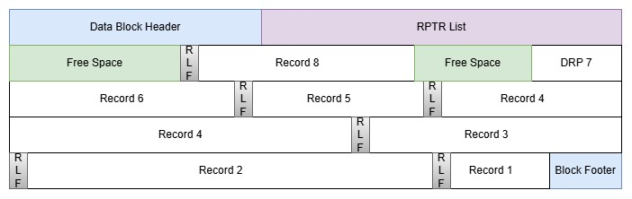
What the diagram shows: - block header and block footer in blue at beginning and end of block - RPTR list in violet following the block header immediately - records in white, allocated from the block footer towards the lower end of the block - each record is preceded by an RLF field in grey - Record 7 has been replaced by a DRP; the DRP is not preceded by an RLF - leftover free space in green filling the area between the RPTR list and the records - leftover free space in green filling the area between record 8 and the DRP for record 7; this gap was created when record 7 was moved out - the DRP is smaller than the record it represents - remaining free space was not enough to accommodate the next record; the block is full; free space is usable for lengthening existing records only - elements are not to scale
[!NOTE] Over time, length-changing update operations may cause records to appear out-of-sequence on the block. The logical sequence of the records and slots is defined by the RPTR list, not by their physical order within the block.
[!NOTE] The format of an ESDS block with Variable records is identical to that for a KSDS.
| Function | Notes |
|---|---|
| Add | Yes, but only to the end of the dataset |
| Update | Yes |
| Delete | allow mode only |
| Length change | allow mode only |
| Access by | Sequence, XLRA, or AIX key |
[!NOTE] A rewrite that lengthens a record may require more room than is available on the block. In this case the RPTR is marked as a displaced record, and the record is physically stored on a nearby Block that has enough free space to accommodate the lengthened record.
ESDS Variable Spanned
In principle, the records are stored one after another, filling the block until no space is left. Every record is preceded by a Record Length Field (RLF). When remaining free space is insufficient to accommodate another record, that free space remains unallocated and the record is placed on the next block. Remaining free space can be used when an existing record on the block is lengthened, or when a segmented record is shortened.
If record length is small enough to make a record fit on a block, the record is stored without being segmented. In this case the record will be stored as if it were a Non-Spanned Variable-length record.
For a record that cannot be stored in its entirety within a single Data Block, the record will be represented by a Displaced Record Pointer (DRP). The DRP is stored on the data block in the location where the record would have gone if it had been small enough.
A segmented record's data content - including its RLF - is split into segments; each segment is prefixed with a Segment Prefix (SPX). Each segment plus its SPX is made to exactly fill an entire segment block, except the last one. Remaining free space is usable only for extending the record; no other record data can be placed in the free space area of a segment block.
The segment blocks are chained in sequence onto the segment chain. The DRP points to the first segment block of the record.
A segmented record occupying only a single segment can be created when a multi-segment record is updated to a shorter length, such that a single segment can hold the entire record.
This dataset type is a zVSAM extension.
zVSAM extension: in allow mode an alternate key need not be in the first segment.
Below we show an example showing how various numbers of records might fit into the blocks of the file, or how a single record might occupy multiple blocks of the file
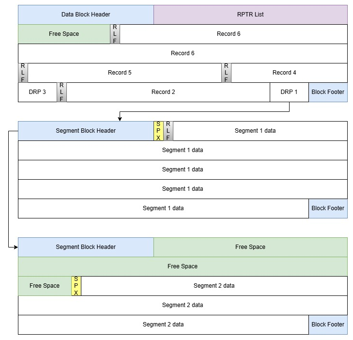
What the diagram shows: - a single data block with: - block header and block footer in blue at beginning and end of the block - RPTR list in violet following the block header immediately on the data block - DRPs and records in white on the data block; records are preceded by a RLF; DRPs are not preceded by a RLF - leftover free space in green filling the area between the RPTR list and the DRP / record data - elements are not to scale; yet all DRPs are shown equal in size - two segment blocks, holding a single record: - block header and block footer in blue at beginning and end of each block - no RPTR list on any segment block - a single SPX preceding each segment, a first and last SPX are shown; no middle SPX in this example - the RLF follows the first segment's SPX, preceding actual record data - segments in white, allocated from the block footer towards the lower end of the block; the first block is entirely filled - leftover free space in green filling the area between the block header and the segment's SPX on the last segment only - remaining free space is unusable, except for lengthening the record - elements are not to scale
[!NOTE] Over time, length-changing update operations may cause records to appear out-of-sequence on the block. The logical sequence of the records and slots is defined by the RPTR list, not by their physical order within the block.
[!NOTE] The format of an ESDS block with Variable Spanned records is identical to that for a KSDS.
| Function | Notes |
|---|---|
| Add | Yes, but only to the end of the dataset |
| Update | Yes |
| Delete | allow mode only |
| Length change | allow mode only |
| Access by | Sequence, XLRA, or AIX key |
[!NOTE] A rewrite that lengthens a record may require more room than is available on the block. In this case the RPTR is marked as a displaced record, and the record is physically stored on another Block that has enough free space to accommodate the lengthened record.
[!NOTE] When a record is lengthened, it may be necessary to convert it from a normal variable-length record to a segmented one. When a record is shortened - at least in theory - a segmented record might qualify to be converted to a normal variable-length record. Whether we implement this latter conversion remains to be seen. There is no hard reason to object against having shortened VS record consisting of a single segment that occupies only a single segment block.
KSDS Fixed non-Spanned
The records are stored one after another, filling the block until no space is left.
When the remaining free space is insufficient to accommodate another record, that free space remains
unusable. Unusable space can be eliminated by building the dataset with DATAADJUST=YES.
Blocks can be allocated with free space for add operations (DATAFREESPACE=nn).
During add operations available free space gets allocated to the records being added.
When the block is full the block will be split and any new block will have at least nn% free space.
Format:
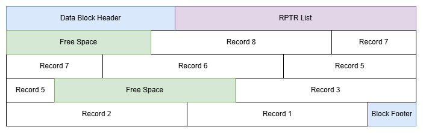
What the diagram shows: - block header and block footer in blue at beginning and end of block - RPTR list in violet following the block header immediately - records in white, allocated from the block footer towards the lower end of the block - leftover free space in green filling the area between the RPTR list and the records - free space in green filling the area between records 3 and 5; this area was used for record 4 which has been deleted - free space has not yet been consolidated - remaining free space is enough to accommodate another record, whether consolidated or not - elements are not to scale; yet all records are shown equal in size
[!NOTE] Over time, add/delete operations may cause records to appear out-of-sequence on the block. The logical sequence of the records and slots is defined by the RPTR list, not by their physical order within the block.
[!NOTE] The format of a KSDS block with Fixed Non-Spanned records is identical to that for an ESDS.
| Function | Notes |
|---|---|
| Add | Yes |
| Update | Yes, the primary key must not be changed |
| Delete | Yes |
| Length change | n/a |
| Access by | Sequence, Primary key, AIX key, or XLRA |
KSDS Fixed Spanned
If record length is small enough to make each record fit on a block, the spanned attribute is effectively ignored and the cluster's internal organization is identical to that of a KSDS with Fixed Non-Spanned records. The record length being Fixed, this will hold either for all records, or for none of them.
Assuming the record length is such that a record cannot be stored in its entirety within a single Data Block, each record will be represented by a Displaced Record Pointer (DRP). The DRPs are stored one after another in the data block.
The record's data content is split into segments; each segment is prefixed with a Segment Prefix (SPX). Each segment plus its SPX is made to exactly fill an entire segment block, except the last one. Remaining free space is usable only for extending the record; no other record data can be placed in the free space area of a segment block.
The segment blocks are chained in sequence onto the segment chain. The DRP points to the first segment block of the record.
zVSAM extension: in allow mode neither the primary nor any alternate key need not be in the first segment.
Below we show an example where each record requires two segments:
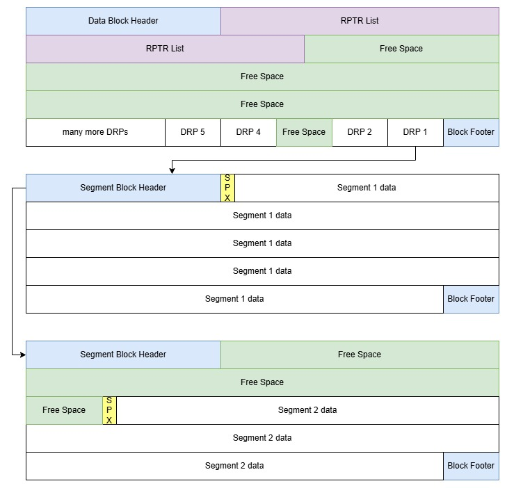
What the diagram shows: - a single data block with: - block header and block footer in blue at beginning and end of the block - RPTR list in violet following the block header immediately on the data block - DRPs in white on the data block. DRPs are small, hence we expect a long RPTR list and many DRPs on a data block - DRP 3 is missing, its location is marked free space - this is the result of record #3 having been deleted - leftover free space in green filling the area between the RPTR list and the DRPs - free space has not yet been consolidated - elements are not to scale; yet all DRPs are shown equal in size - two segment blocks, holding a single record: - block header and block footer in blue at beginning and end of each block - no RPTR list on any segment block - a single SPX preceding each segment, a first and last SPX are shown; no middle SPX in this example - segments in white, allocated from the block footer towards the lower end of the block; the first block is entirely filled - leftover free space in green filling the area between the block header and the segment's SPX on the last segment only - remaining free space is unusable, except for lengthening the record - elements are not to scale
[!NOTE] Over time, add/delete operations may cause records to appear out-of-sequence on the block. The logical sequence of the records and slots is defined by the RPTR list, not by their physical order within the block.
[!NOTE] The format of a KSDS block with Fixed Spanned records is identical to that for an ESDS.
| Function | Notes |
|---|---|
| Add | Yes |
| Update | Yes, the primary key must not be changed |
| Delete | Yes |
| Length change | n/a |
| Access by | Sequence, Primary key, AIX key, or XLRA |
KSDS Variable non-Spanned
The records are stored one after another, filling the block until no space is left. Every record is preceded by a Record Length Field (RLF).
When remaining free space is insufficient to accommodate another record, that free space remains unallocated and the record is placed on the next block.
A Displaced Record Pointer (DRP) is created when an existing record is lengthened, such that it no longer fits on the block. The DRP takes its place, and the record itself is stored on another data block.
Below we show an example showing how various numbers of records might fit into the blocks
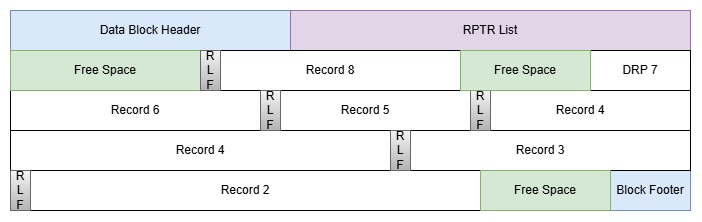
What the diagram shows: - block header and block footer in blue at beginning and end of block - RPTR list in violet following the block header immediately - records in white, allocated from the block footer towards the lower end of the block - each record is preceded by an RLF field in grey - Record 7 has been replaced by a DRP; the DRP is not preceded by an RLF - Record 1 has been deleted, the area it occupied is now marked free space - leftover free space in green filling the area between the RPTR list and the records - leftover free space in green filling the area between record 8 and the DRP for record 7; this gap was created when record 7 was moved out - the DRP is smaller than the record it represents - free space has not yet been consolidated - remaining free space may be consolidated when needed, typically before inserting a new record - elements are not to scale
[!NOTE] Over time, add/delete/length-changing update operations may cause records to appear out-of-sequence on the block. The logical sequence of the records and slots is defined by the RPTR list, not by their physical order within the block.
[!NOTE] The format of a KSDS block with Variable records is identical to that for an ESDS.
| Function | Notes |
|---|---|
| Add | Yes |
| Update | Yes, the primary key must not be changed |
| Delete | Yes |
| Length change | Yes. When a record is shortened it must not affect the primary key or any AIX key |
| Access by | Sequence, Primary key, AIX key, or XLRA |
[!NOTE] A rewrite that lengthens a record may require more room than is available on the block. In this case the RPTR may be marked as a displaced record, and the record is physically stored on a nearby Block that has enough free space to accommodate the lengthened record. Alternatively, zVSAM may decide to split the entire data block into two blocks.
KSDS Variable Spanned
In principle, the records are stored one after another, filling the block until no space is left. Every record is preceded by a Record Length Field (RLF). When remaining free space is insufficient to accommodate another record, that free space remains unallocated and the record is placed on the next block. Remaining free space can be used when an existing record on the block is lengthened, or when a segmented record is shortened.
If record length is small enough to make a record fit on a block, the record is stored without being segmented. In this case the record will be stored as if it were a Non-Spanned Variable-length record.
For a record that cannot be stored in its entirety within a single Data Block, the record will be represented by a Displaced Record Pointer (DRP). The DRP is stored on the data block in the location where the record would have gone if it had been small enough.
A segmented record's data content - including its RLF - is split into segments; each segment is prefixed with a Segment Prefix (SPX). Each segment plus its SPX is made to exactly fill an entire segment block, except the last one. Remaining free space is usable only for extending the record; no other record data can be placed in the free space area of a segment block.
The segment blocks are chained in sequence onto the segment chain. The DRP points to the first segment block of the record.
A segmented record occupying only a single segment can be created when a multi-segment record is updated to a shorter length, such that a single segment can hold the entire record.
zVSAM extension: in allow mode neither the primary nor any alternate key need not be in the first segment.
Below we show an example showing how various numbers of records might fit into the blocks of the file, or how a single record might occupy multiple blocks of the file.
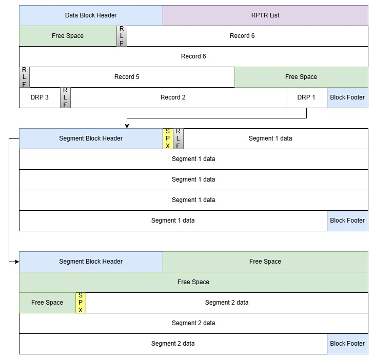
What the diagram shows: - a single data block with: - block header and block footer in blue at beginning and end of the block - RPTR list in violet following the block header immediately on the data block - DRPs and records in white on the data block; records are preceded by a RLF; DRPs are not preceded by a RLF - leftover free space in green filling the area between the RPTR list and the DRP / record data - free space in green filling the area between record 3 and DRP 5, marking the area where record 4 was stored before it got deleted - free space has not been consolidated - it will be consolidated when needed - elements are not to scale; yet all DRPs are shown equal in size - two segment blocks, holding a single record: - block header and block footer in blue at beginning and end of each block - no RPTR list on any segment block - a single SPX preceding each segment, a first and last SPX are shown; no middle SPX in this example - the RLF follows the first segment's SPX, preceding actual record data - segments in white, allocated from the block footer towards the lower end of the block; the first block is entirely filled - leftover free space in green filling the area between the block header and the segment's SPX on the last segment only - remaining free space is unusable, except for lengthening the record - elements are not to scale
[!NOTE] Over time, add/delete/length-changing update operations may cause records to appear out-of-sequence on the block. The logical sequence of the records and slots is defined by the RPTR list, not by their physical order within the block.
[!NOTE] The format of a KSDS block with Variable Spanned records is identical to that for an ESDS.
| Function | Notes |
|---|---|
| Add | Yes |
| Update | Yes, the primary key must not be changed |
| Delete | Yes |
| Length change | Yes. When a record is shortened it must not affect the primary key or any AIX key |
| Access by | Sequence, Primary key, AIX key, or XLRA |
[!NOTE] A rewrite that lengthens a record may require more room than is available on the block. In this case the RPTR is marked as a displaced record, and the record is physically stored on a nearby Block that has enough free space to accommodate the lengthened record.
[!NOTE] When a record is lengthened, it may be necessary to convert it from a normal variable-length record to a segmented one. When a record is shortened - at least in theory - a segmented record might qualify to be converted to a normal variable-length record. Whether we implement this latter conversion remains to be seen. There is no hard reason to object against having shortened VS record consisting of a single segment that occupies less than a single Block.
RRDS Fixed non-Spanned
An RRDS consists of slots (RRNs) which may or may not contain a record.
Empty slots are defined by their RPTR entry having the RPTR_MTY flag set and are filled with binary zeros.
The records or slots are stored one after another, filling the block until no space is left.
When the remaining free space is insufficient to accommodate another record, that free space remains
unusable. Unusable space can be eliminated by building the dataset with DATAADJUST=YES.
Below we show an example where 8 record slots fit into a block:
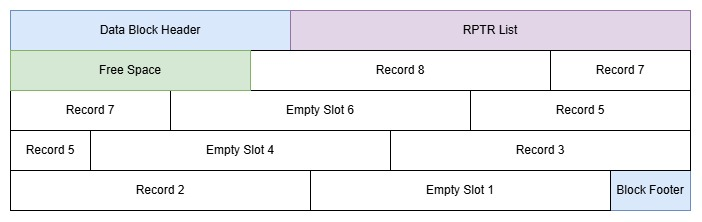
What the diagram shows: - block header and block footer in blue at beginning and end of block - RPTR list in violet following the block header immediately - records and empty slots in white, allocated from the block footer towards the lower end of the block - leftover free space in green filling the area between the RPTR list and the records - remaining free space is not enough to accommodate another record; the free space is unusable - elements are not to scale; yet all records are shown equal in size
[!NOTE] Records and slots never appear out-of-sequence on the block. The logical sequence of the records and slots is defined both by the RPTR list, and by their physical order within the block.
| Function | Notes |
|---|---|
| Add | Yes, but only to the end of the dataset |
| Update | Yes |
| Delete | Yes, slots may not be deleted. RPTR_MTY is set |
| Length change | n/a |
| Access by | Sequence, RRN, or XLRA |
RRDS Fixed Spanned
An RRDS consists of slots (RRNs) which may or may not contain a record.
Empty slots are defined by their RPTR entry having the RPTR_MTY flag set and are filled with binary zeros.
If record length is small enough to make each record fit on a block, the spanned attribute is effectively ignored and the cluster's internal organization is identical to that of an RRDS with Fixed Non-Spanned records. The record length being Fixed, this will hold either for all records, or for none of them.
Assuming the record length is such that a record cannot be stored in its entirety within a single Data Block, each record or slot will be represented by a Displaced Record Pointer (DRP). The DRPs are stored one after another in the data block.
The record's data content is split into segments; each segment is prefixed with a Segment Prefix (SPX). Each segment plus its SPX is made to exactly fill an entire segment block, except the last one. Remaining free space is usable only for extending the record; no other record data can be placed in the free space area of a segment block.
The segment blocks are chained in sequence onto the segment chain. The DRP points to the first segment block of the record.
This dataset type is a zVSAM extension.
zVSAM extension: in allow mode an alternate key need not be in the first segment.
Below we show an example where each record requires two segments:
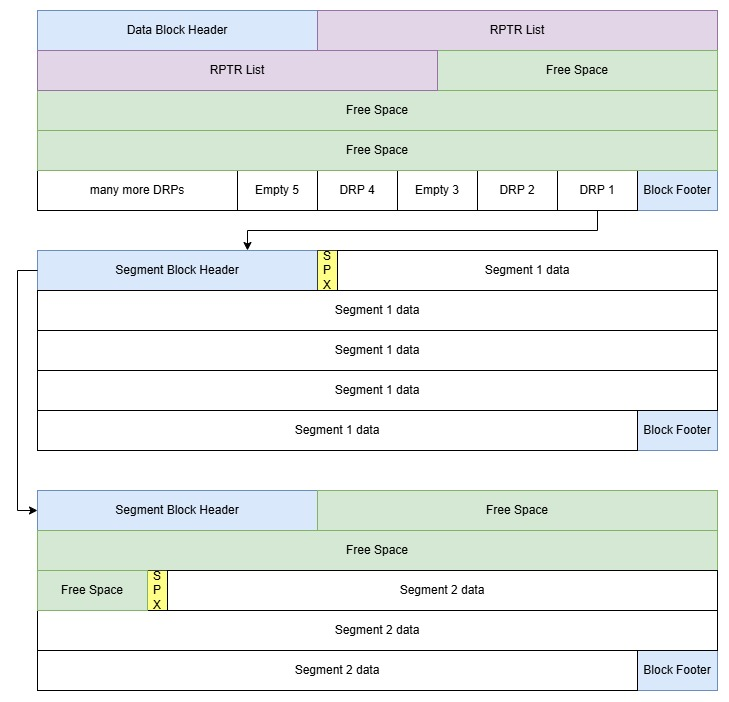
What the diagram shows: - a single data block with: - block header and block footer in blue at beginning and end of the block - RPTR list in violet following the block header immediately on the data block - DRPs in white on the data block. DRPs are small, hence we expect a long RPTR list and many DRPs on a data block - leftover free space in green filling the area between the RPTR list and the DRPs - the maximum number of DRPs that can be addressed on a single block may not be enough to fill the entire block. The remainder is unusable free space. - elements are not to scale; yet all DRPs are shown equal in size - two segment blocks, holding a single record: - block header and block footer in blue at beginning and end of each block - no RPTR list on any segment block - a single SPX preceding each segment, a first and last SPX are shown; no middle SPX in this example - segments in white, allocated from the block footer towards the lower end of the block; the first block is entirely filled - leftover free space in green filling the area between the block header and the segment's SPX on the last segment only - remaining free space is unusable, except for lengthening the record - elements are not to scale
[!NOTE] Records never appear out-of-sequence on the block. The logical sequence of the records and slots is defined both by the RPTR list, and by their physical order within the block.
| Function | Notes |
|---|---|
| Add | Yes, but only to the end of the dataset |
| Update | Yes |
| Delete | Yes, slots may not be deleted. RPTR_MTY is set |
| Length change | n/a |
| Access by | Sequence, RRN, or XLRA |
RRDS Variable non-Spanned
An RRDS consists of slots (RRNs) which may or may not contain a record.
Empty slots are defined by their RPTR entry having the RPTR_MTY flag set.
The RLF will still be valid for the slot, with a length of 4 (length of the RLF without record data).
The records or slots are stored one after another, filling the block until no space is left. Every record is preceded by a Record Length Field (RLF).
When remaining free space is insufficient to accommodate another record or slot, that free space remains unallocated and the record or slot is placed on the next block.
A Displaced Record Pointer (DRP) is created when an existing record is lengthened, such that it no longer fits on the block. The DRP takes its place, and the record itself is stored on another data block.
[!NOTE] A rewrite that lengthens a record may require more room than is available on the block. In this case the RPTR is marked as a displaced record, and the record is physically stored on a nearby Block that has enough free space to accommodate the lengthened record.
Below we show an example showing how various numbers of records might fit into the blocks
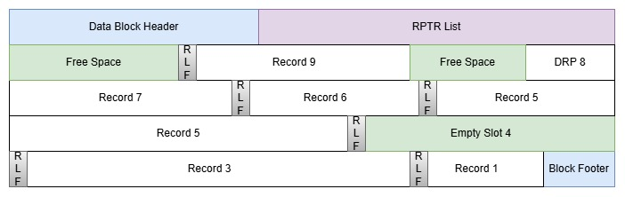
What the diagram shows:
- block header and block footer in blue at beginning and end of block
- RPTR list in violet following the block header immediately
- records and empty slots in white, allocated from the block footer towards the lower end of the block
- each record is preceded by an RLF field in grey
- Record 8 has been replaced by a DRP; the DRP is not preceded by an RLF
- Record 4 has been deleted, the area it occupied might be reclaimed as free space, but there has been no need to do so on this block
- Slot 2 has never been used - its RPTR has the RPTR_MTY flag set to indicate its absence
- leftover free space in green filling the area between the RPTR list and the records
- leftover free space in green filling the area between record 9 and the DRP for record 8; this gap was created when record 8 was moved out - the DRP is smaller than the record it represents
- remaining free space was not enough to accommodate the next record; the block is full; free space is usable for lengthening existing records only
- elements are not to scale
[!NOTE] When a data block is extended by adding a record beyond the highest allocated slot, as many blocks as needed will be created to define and hold all intervening slots. The blocks will mainly consist of empty record slots, each having an RLF only.
[!NOTE] Over time, add/delete/length-changing update operations may cause records to appear out-of-sequence on the block. The logical sequence of the records and slots is defined by the RPTR list, not by their physical order within the block.
| Function | Notes |
|---|---|
| Add | Yes, but only to the end of the dataset |
| Update | Yes |
| Delete | Yes, slots may not be deleted. RPTR_MTY is set |
| Length change | Yes |
| Access by | Sequence,RRN, or XLRA |
RRDS Variable Spanned
An RRDS consists of slots (RRNs) which may or may not contain a record.
Empty slots are defined by their RPTR entry having the RPTR_MTY flag set.
The RLF will still be valid for the slot, with a length of 4 (length of the RLF without record data).
In principle, the records are stored one after another, filling the block until no space is left. Every record is preceded by a Record Length Field (RLF). When remaining free space is insufficient to accommodate another record, that free space remains unallocated and the record is placed on the next block. Remaining free space can be used when an existing record on the block is lengthened, or when a segmented record is shortened.
If record length is small enough to make a record fit on its block, the record is stored without being segmented. In this case the record will be stored as if it were a Non-Spanned Variable-length record.
For a record that cannot be stored in its entirety within its Data Block, the record will be represented by a Displaced Record Pointer (DRP). The DRP is stored on the data block in the location where the record would have gone if it had been small enough.
A segmented record's data content - including its RLF - is split into segments; each segment is prefixed with a Segment Prefix (SPX). Each segment plus its SPX is made to exactly fill an entire segment block, except the last one. Remaining free space is usable only for extending the record; no other record data can be placed in the free space area of a segment block.
The segment blocks are chained in sequence onto the segment chain. The DRP points to the first segment block of the record.
A segmented record occupying only a single segment can be created when a multi-segment record is updated to a shorter length, such that a single segment can hold the entire record.
This dataset type is a zVSAM extension.
zVSAM extension: in allow mode an alternate key need not be in the first segment.
Below we show an example showing how various numbers of records might fit into the blocks of the file, or how a single record might occupy multiple blocks of the file

What the diagram shows: - a single data block with: - block header and block footer in blue at beginning and end of the block - RPTR list in violet following the block header immediately on the data block - DRPs and records in white on the data block; records are preceded by a RLF; DRPs are not preceded by a RLF - leftover free space in green filling the area between the RPTR list and the DRP / record data - elements are not to scale; yet all DRPs are shown equal in size - two segment blocks, holding a single record: - block header and block footer in blue at beginning and end of each block - no RPTR list on any segment block - a single SPX preceding each segment, a first and last SPX are shown; no middle SPX in this example - the RLF follows the first segment's SPX, preceding actual record data - segments in white, allocated from the block footer towards the lower end of the block; the first block is entirely filled - leftover free space in green filling the area between the block header and the segment's SPX on the last segment only - remaining free space is unusable, except for lengthening the record - elements are not to scale
[!NOTE] Over time, add/delete/length-changing update operations may cause records to appear out-of-sequence on the block. The logical sequence of the records and slots is defined by the RPTR list, not by their physical order within the block.
| Function | Notes |
|---|---|
| Add | Yes, but only to the end of the dataset |
| Update | Yes |
| Delete | Yes, slots may not be deleted. RPTR_MTY is set |
| Length change | Yes |
| Access by | Sequence, RRN, or XLRA |
[!NOTE] A rewrite that lengthens a record may require more room than is available on the block. In this case the RPTR is marked as a displaced record, and the record is physically stored on a nearby Block that has enough free space to accommodate the lengthened record.
[!NOTE] When a record is lengthened, it may be necessary to convert it from a normal variable-length record to a segmented one. When a record is shortened - at least in theory - a segmented record might qualify to be converted to a normal variable-length record. Whether we implement this latter conversion remains to be seen. There is no hard reason to object against having shortened VS record consisting of a single segment that occupies less than a single Block.
AIX Unique
AIX data records for a Unique Alternate Index consist of an Alternate Key value and the single primary key value (KSDS), RRN (RRDS) or XLRA (ESDS) of the data record.
AIX unique records have the following format:
| AIX on | Record Format |
|---|---|
| ESDS | AIX key, followed by 1 XLRA |
| KSDS | AIX key, followed by 1 primary key |
| RRDS | AIX key, followed by 1 RRN |
This means that a Unique AIX has fixed-length records, and the AIX cluster is mostly treated as a KSDS with a record type of F.
Only when the AIX is opened as a path, will zVSAM use the AIX data to retrieve records from the underlying base cluster.
Below we show an example showing how various numbers of records might fit into a unique AIX's data block
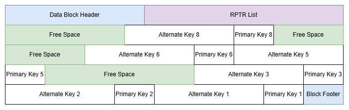
What the diagram shows: - block header and block footer in blue at beginning and end of block - RPTR list in violet following the block header immediately - records in white, allocated from the block footer towards the lower end of the block - each record consisting of an Alternate Key value, followed by its associated Primary Key value (Assuming a KSDS base cluster) - leftover free space in green filling the area between the RPTR list and the records - free space in green filling the area between records 6 and 8; this area was used for record 7 which has been deleted - free space in green filling the area between records 3 and 5; this area was used for record 4 which has been deleted - free space has not yet been consolidated - remaining free space is enough to accommodate another record, whether consolidated or not - elements are not to scale; yet all records are shown equal in size
What the diagram does not show: - the index structure of the AIX - the relationship with the base cluster
[!NOTE] Over time, add/delete operations may cause records to appear out-of-sequence on the block. The logical sequence of the records and slots is defined by the RPTR list, not by their physical order within the block.
| Function | Notes |
|---|---|
| Add | When record is added to base cluster |
| Update | When XLRA of base record changes |
| Delete | When record is deleted from base cluster |
| Add + Delete | When alternate key value in base record changes |
| Length change | n/a |
| Access by | See KSDS. May also be opened as a Path |
AIX Non-unique
AIX data records for a Non-Unique Alternate Index consist of an Alternate Key value and a list of primary key values (KSDS), RRNs (RRDS) or XLRAs (ESDS) of the data record(s).
AIX non-unique records have the following format:
| AIX on | Record Format |
|---|---|
| ESDS | AIX key, an element count n(4) followed by n XLRAs |
| KSDS | AIX key, an element count n(4) followed by n primary keys |
| RRDS | AIX key, an element count n(4) followed by n RRNs |
The number of primary keys on the record has no limit, other than the maximum number that can be represented as a 4-byte value. No block size is guaranteed to be large enough to hold the longest of these records. This means that a Non-Unique AIX must have variable-length spanned records, and the AIX cluster is mostly treated as a KSDS with a record type of VS.
Short AIX records reside on a data block. When a record grows beyond the capacity of a single data block, it is segmented and moved onto as many segments as needed. The place of the AIX record in the data block is taken by a DRP.
Segmentation of AIX records differs from segmentation of data records in that no index entry is split across segments. Segments are always split at an index boundary. Each segment will contain up to the maximum number of index entries that will fit on a block, if any free space is left, it is unusable free space. When entries are deleted a segment may shrink - the deleted entry is propagated to the end of the segment, but not carried over into subsequent segments. Free space created in this way can be reused when a new entry needs to be added.
Only when the AIX is opened as a path, will zVSAM use the AIX data to retrieve records from the underlying base cluster.
Below we show an example showing how various numbers of records might fit into a non-unique AIX's data block
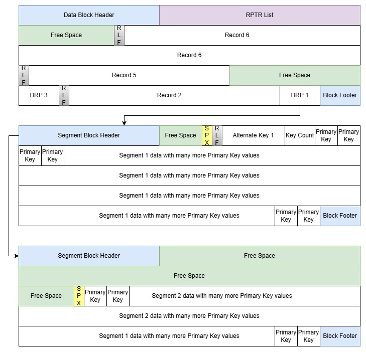
What the diagram shows: - a single data block with: - block header and block footer in blue at beginning and end of the block - RPTR list in violet following the block header immediately on the data block - DRPs and records in white on the data block; records are preceded by a RLF; DRPs are not preceded by a RLF - leftover free space in green filling the area between the RPTR list and the DRP / record data - free space in green filling the area between record 3 and DRP 5, marking the area where record 4 was stored before it got deleted - free space has not been consolidated - it will be consolidated when needed - elements are not to scale; yet all DRPs are shown equal in size - two segment blocks, holding a single record: - block header and block footer in blue at beginning and end of each block - DRP 1 on the data block points to the first segment block, which points to the second segment block. - no RPTR list on any segment block - a single SPX preceding each segment, a first and last SPX are shown; no middle SPX in this example - the RLF follows the first segment's SPX, preceding actual record data - segments in white, allocated from the block footer towards the lower end of the block - primary key values never span a segment boundary; some free space may be left over in any segment - leftover free space in green filling the area between the block header and the segment's SPX on both segments - remaining free space is unusable, except for lengthening the record (addition of more primary key values) - there is no free space in the middle of a segment - removal of a primary key value causes the segment to shrink. - elements are not to scale
What the diagram does not show: - the index structure of the AIX - the relationship with the base cluster - the doubly linked data chain - the doubly linked segment chain
| Function | Notes |
|---|---|
| Add | When new alternate key is added to base cluster |
| Update | When nr of primary keys changes |
| Delete | When primary key count drops to zero |
| Length change | When nr of primary keys changes |
| Access by | See KSDS. May also be opened as a Path |
[!NOTE] Over time, add/delete/length-changing update operations may cause records to appear out-of-sequence on the data block. The logical sequence of the records and slots is defined by the RPTR list, not by their physical order within the block.
LDS Blocks
LDS Blocks have no structure imposed by zVSAM. The entire data block is treated as user data. There is no Block Header, Block Footer, and no RPTR list. Just user data; as many bytes of user data as the block size indicates. LDS blocks can be addressed only by their XLRA Block pointer.
Below we show an example of an LDS block
What the diagram shows: - a single data block without any imposed or pre-defined structure. Any structure in the data is defined and implemented by the application.
| Function | Notes |
|---|---|
| Add | Append only |
| Update | Yes |
| Delete | No |
| Length change | No |
| Access by | Sequence or XLRA |
Block Structures
Each block - except a raw block - has an internal structure as outlined in Components of a Block.
In the following paragraphs these structures are outlined in more detail.
Block Header
Every non-Raw Block has a block header (ZVSAMHDR).
All block headers have the same structure.
Block Headers are formatted as follows:
| Label | Offset | Field type | Function |
|---|---|---|---|
| ZVSAMHDR | DSECT | Block header area | |
| BHDREYE | X'000' | CL3 | =C'HDR' – eyecatcher to mark the area |
| BHDRSEQ# | X'003' | XL1 | Write control value |
| BHDRVER | X'004' | XL1 | Design sequence number |
| BHDR_V2 | =X'02' | Current design version number | |
| BHDRFLG1 | X'005' | XL1 | Flags |
| BHDR_PFX | =X'80' | Prefix block | |
| BHDR_MAP | =X'40' | Spacemap block | |
| BHDR_DTA | =X'20' | Data block | |
| BHDR_IDX | =X'10' | Index block | |
| BHDR_SEG | =X'08' | Segment block | |
| BHDR_LEF | =X'04' | Index leaf Block | |
| BHDR_INT | =X'02' | Index intermediate block | |
| BHDR_ROT | =X'01' | Index root block | |
| BHDR#REC | X'006' | XL2 | Nr of records on this block |
| BHDRSELF | X'008' | XL8 | XLRA of this block |
| BHDRNEXT | X'010' | XL8 | XLRA of next block on chain |
| BHDRPREV | X'018' | XL8 | XLRA of previous block on chain |
| BHDRFRE@ | X'020' | XL3 | Offset of free area on this block |
| BHDRFREE | X'023' | XL3 | Length of free area on this block |
| BHDRXLVL | X'026' | XL1 | Index level |
| BHDRFRST | X'027' | XL1 | Index of first RPTR in logical sequence |
BHDRSEQ# is incremented by one every time the block is written out to the file.
The footer area contains a comparable field: BFTRSEQ#. Together they guard against incomplete writes.
BHDRXLVL indicates the index level. Zero is the leaf level. Index blocks are chained by level.
That is, for every index level in use there is a pair of pointers in the prefix block (PFXBLVLn/PFXELVLn)
that starts and ends the chain for that level.
BHDRSELF contains the block's own XLRA. This helps to guard against misdirected reads and/or writes.
BHDRNEXT/BHDRPREV point to the next and previous block on the chain. Which chain this is, depends
on the BHDRFLG1 setting, and, if this is an index block, by the BHDRXLVL value.
For the prefix block, these two fields are set to foxes.
BHDRFRST points to the first RPTR in the logical sequence. In cases where that RPTR cannot be represented
in the single byte available (its index value exceeds 255) a value of zero is stored, indicating that the
first RPTR can be found only by starting from entry 1 and following the RPTRPREV chain.
Free blocks are not on any chain, for these blocks the BHDRPREV/BHDRNEXT pointers can have any value.
Also, there is no explicit flag to mark free blocks as such. This avoids the need to update blocks when they are freed.
Segmented records are a special case. Segments of a segmented record never share their block with other data. All segment blocks are on the segment chain. The DRP that represents the record and its position on the data block points to the first segment block of the record. Subsequent segments are retrieved by following the segment chain until a segment is encountered with an SPX that indicates it is the last segment of the record.
Block Footer
Every block (except raw blocks) has a block footer. All block footers have the same structure. It is formatted as follows:
| Label | Offset | Field type | Function |
|---|---|---|---|
| ZVSAMFTR | DSECT | Block footer area | |
| BFTREYE | X'000' | CL3 | =C'FTR' – eyecatcher to mark the area |
| BFTRSEQ# | X'003' | XL1 | Write control value |
BFTRSEQ# is incremented by one every time the block is written out to the file.
The header area contains a comparable field: BHDRSEQ#. Together they guard against incomplete writes.
Prefix Area
The prefix block (ZVSAMPFX) consists of the first 4096 bytes of every physical file.
It contains meta-data defining the file and its attributes. It also contains various counters.
The prefix block consists of a block header immediately followed by the prefix area. The prefix block also contains other data fields; these are addressed from the prefix area. The prefix block ends with a block footer. A record pointer list is not present on the prefix block.
There are various pointer fields in the prefix area. These point to fields allocated elsewhere in the prefix block.
Their exact addresses on the prefix block may vary:
- PFXDPAT@, PFXDNAM@, PFXXPAT@, PFXXNAM@ all point to a halfword-prefixed string.
- PFXDVOL@ and PFXXVOL@ both point at a halfword-prefixed string that holds either:
- the volume label on Windows systems
- the UUID (as a string) on Linux/Unix systems
The PFXCTRS@ pointer addresses a separate area that holds various counters.
The PFXRM@ pointer addresses the RRN map if the cluster is a RRDS.
The Counters area (ZVSAMCTR) directly follows the Prefix area on the Prefix Block, it is doubleword aligned.
This area is expected to move into the catalog dataset in a future release.
The overall structure of the prefix block would look something like this (areas not to scale):
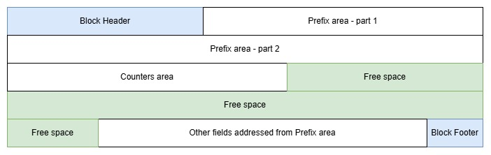
What the diagram shows: - block header and block footer in blue at beginning and end of the block - the prefix area, immediately followed by the counters area - leftover free space in green - other fields addressed from the prefix area - elements are not to scale
The addenda part of this document contains more details on the prefix area.
Counters Area
The addenda part of this document contains more details on the counters area and its maintenance.
RRN map
The RRN map is used to map RRN ranges to XLRA ranges. - Each data block in the RRDS holds a fixed number of record slots - Each range of contiguously allocated data blocks is represented by a single entry on the RRN map - Each entry contains the starting block XLRA, an ending block XLRA, and the starting RRN value
The RRN map entries are formatted as follows:
| Label | Offset | Field type | Function |
|---|---|---|---|
| ZVSAMRME | DSECT | RRN map entry | |
| RMESXLRA | X'000' | XL8 | Low XLRA of range |
| RMEHXLRA | X'008' | XL8 | High XLRA of range |
| RMESRRN | X'010' | XL8 | Starting RRN |
The prefix area contains:
- PFXRM@ a pointer to the RRN map, which is a table of RRN map entries.
- PFXRME# the number of entries in the table.
Spacemap
Spacemap blocks (ZVSAMMAP) are used to manage available free space in a component.
Each spacemap block has a size that matches the blocksize of all other blocks
(except possibly the prefix block) in the component.
A component will hold as many spacemap blocks as needed to map all of its allocated blocks,
including all spacemap blocks but excluding the prefix block. Whenever a single spacemap block is not enough,
the spacemap blocks are chained together by means of the BHDRNEXT/BHDRPREV pointers in the block header area.
The spacemap chain starts/ends from the prefix block, fields PFXBMAP/PFXEMAP.
When a single spacemap block suffices, PFXBMAP and PFXEMAP will both point to that block.
Each spacemap block consists of a block header immediately followed by the spacemap area, which in turn is followed directly by the block footer. No free space exists on a spacemap block.
Thus, the last spacemap block may map blocks that do not exist in the dataset.
The bit settings for blocks beyond the PFXHXLRA should all be zero to indicate an unallocated block.
zVSAM is aware that any block beyond PFXHXLRA needs to be created and initialized before it can be allocated.
The spacemap area is formatted as follows:
| Label | Offset | Field type | Function |
|---|---|---|---|
| ZVSAMMAP | DSECT | Spacemap area | |
| MAPXLRA | X'000' | XL8 | XLRA of first block addressed by this spacemap area |
| MAPBITS | X'008' | 0B | Bitmap indicating availability |
The MAPBITS label addresses an array of bytes, each of which addresses 4 blocks of the file,
the status of each block being represented by two bits. Each byte relates to 4 blocks in direct succession to one another,
the bytes in the array mapping to successive sequences of 4 blocks.
The bits in the MAPBITS array are encoded as follows:
| Value | Meaning |
|---|---|
| B'00' | block is not allocated. I.e. the block resides on no chain. The block's BHDRNEXT/BHDRPREV fields are meaningless. |
| B'01' | block is allocated but may have insufficient free space. I.e. last allocation attempt failed, but a smaller record might fit. Or last allocation succeeded but left fewer than CTRAVGRL bytes of free space. Not used for blocks holding a segment of a segmented record. |
| B'10' | block is allocated and eligible for record allocation. i.e. last allocation succeeded and left enough free space for a record of average size. (CTRAVGRL) Not used for blocks holding a segment of a segmented record. |
| B'11' | Nothing can be allocated to this block. i.e. last allocation attempt failed, block holds a segment of a segmented record, or block is a spacemap block. |
Conceptually, the overall structure of a spacemap block would look something like this (areas not to scale):
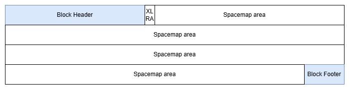
What the diagram shows: - block header and block footer in blue at beginning and end of the block - the spacemap area, covering all remaining space on the block - the XLRA that sits at the beginning of the spacemap area - no free space available - elements are not to scale
Data blocks
Each block has a Record Pointer List (RPTR list). The RPTR list immediately follows the Block Header.
In addition to the offset, the RPTR contains flags to identify the type and status of each record.
RPTR_END marks the end of records in this block.
The records are mostly allocated from the other end of the block (preceding the Footer area) to consolidate free space at the centre.
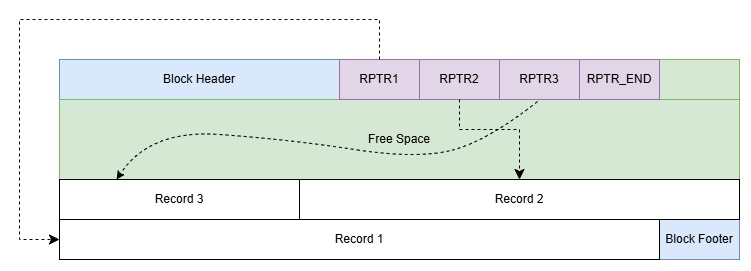
What the diagram shows:
- block header and block footer in blue at beginning and end of block
- RPTR list in violet following the block header immediately
- records in white, allocated from the block footer towards the lower end of the block
- leftover free space in green filling the area between the RPTR list and the records
- each RPTR entry except the trailing RPTR_END entry points to a record that could be anywhere on the block
- elements are not to scale; yet all records are shown equal in size
It is possible to reserve an amount of freespace at load time which also applies if a block is split.
It is specified in the catalog as DATAFREESPACE=nn, where nn is a percentage of the available space.
For all types of fixed non-spanned datasets, the available space in a data block may not be a multiple of the data record size
resulting in unusable space. To correct this use DATAADJUST=YES which will calculate an optimal
blocksize less than the specified one. However, having a block size that is not a multiple of the
sector size of the physical storage media may have an adverse effect on performance.
How the Data Blocks are laid out in the file depends on whether the cluster is defined with Spanned records, or with unspanned records.
Record Pointer List
Every block that contains data records contains a record list (ZVSAMRPT).
Records are accessible only through their Record Pointer or RPTR.
Every entry in the list corresponds with a single record on the block. The last bits of a record's XLRA are the index into the Record Pointer List. This sets an upper limit to the number of records that can be allocated to any single block. Index value of binary zeroes is reserved for block pointers; all other values are usable as RPTR index values. The difference of 1 always needs to be taken into account when indexing the RPTR list.
The RPTR list always follows the block header directly.
The number of entries on the RPTR list varies with the number of records stored on the block (BHDR#REC)
and is terminated by RPTR_END to mark the end of the list.
Record Pointer List entries are formatted as follows:
| Label | Offset | Field type | Function |
|---|---|---|---|
| ZVSAMRPT | DSECT | Record Pointer | |
| RPTRFLGS | X'000' | XL1 | Flag byte |
| RPTR_ACT | =X'80' | Active record | |
| RPTR_MTY | =X'40' | Empty record slot | |
| RPTR_DIS | =X'20' | Record has been displaced to another block | |
| RPTR_MOV | =X'10' | New location of a moved record | |
| RPTR_END | =X'01' | Terminating entry | |
| RPTRREC@ | X'001' | AL3 | Record offset within block - foxes when RPTR_END is set |
For KSDS and AIX the RPTR entries are extended to contain two additional fields:
| Label | Offset | Field type | Function |
|---|---|---|---|
| RPTRPREV | X'004' | XL2 | Index of previous RPTR in logical sequence |
| RPTRNEXT | X'006' | XL2 | Index of next RPTR in logical sequence |
RPTR_ACT and RPTR_MTY are mutually exclusive. Either one must be set, otherwise the RPTR list is compromised and data access will fail.
When RPTR_END is set, RPTRREC@ is set to foxes. RPTR_MTY indicates an empty RRDS slot or a logically deleted record in an ESDS, KSDS, or AIX.
The RPTRPREV and RPTRNEXT define the logical sequence of the records on the block.
They allow records to be inserted in the middle without having to change the XLRA of existing records.
When RPTR_DIS is set, the RPTR addresses a Displaced Record Pointer, rather than the actual data.
The format of a Displaced Record Pointer is as follows:
| Label | Offset | Field type | Function |
|---|---|---|---|
| ZVSAMDRP | DSECT | Displaced Record Pointer | |
| DRPIXLRA | X'000' | XL8 | Indirect XLRA = location of actual record data |
The DRPIXLRA contains a block XLRA for segmented records, a record XLRA for non-segmented records.
For a non-segmented record that has been displaced, its RPTR must have its RPTR_MOV bit set on.
Index Blocks
The index blocks of a KSDS or AIX index component contain index entries, which consist of a primary key and its XLRA in the cluster's data component. The index is organized in a hierarchy of index levels.
Each index Block has an RPTR area, allocated right after the Block Header.
Each RPTR entry contains an in-block offset to the index record.
Additionally, the RPTR contains flags to identify the type and status of each index record.
RPTR_END marks the end of record pointers in this block.
The records are allocated from the end of the block downwards to consolidate free space at the centre.
For Level 0 each record is the key of the base record and is followed by an XLRA. The XLRA is a record pointer that is valid for the cluster's Data component.
For other levels, each record points to an index block in the next lower level in the index hierarchy. Each index record pointer is the highest key in the addressed block followed by that block's XLRA. These non-leaf index records use XLRAs that are block pointers valid for the cluster's Index component; as opposed to the leaf index records which use XLRAs that are record pointers valid for the cluster's Data component.
As each index record is a fixed size it is recommended to specify INDEXADJUST=YES to avoid unusable
free space
Index Block Structure: Single level
This example shows an index of only one block, holding two record pointers
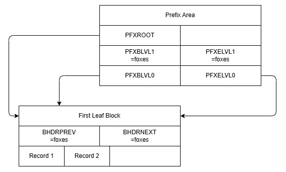
Index Block Structure: Two Levels
This example shows the index after adding three more record pointers, causing the only index block to overflow and split. Now there are two leaf blocks, still on the LVL0 chain, and a new root block has been created on the LVL1 chain
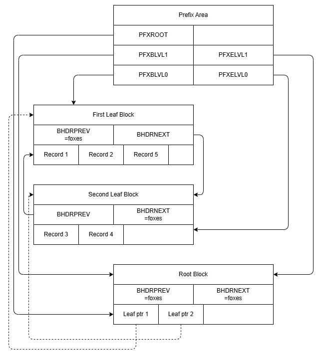
Index Block Level 0
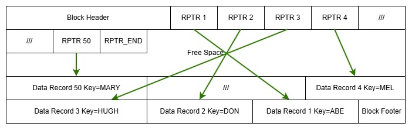
Note how each index record points to a data record. It contains the record's key (shown in the drawing) and its XLRA (not shown in the drawing).
Index Block other levels
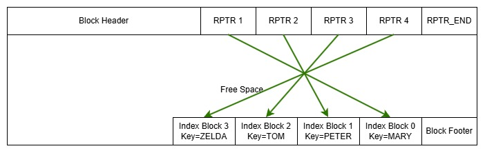
Note how each index record points to an index data block in the next layer of the index. Each index record contains that block's highest key (shown in the drawing) and its XLRA (not shown in the drawing).
It is possible to reserve an amount of freespace at load time which also applies if a block is split.
It is specified in the catalog as INDEXFREESPACE=nn, where nn is a percentage of the available space.
For all types of fixed non-spanned datasets, the available space may not be a multiple of the index record size
resulting in unusable space. To correct this use INDEXADJUST=YES which will calculate an optimal
blocksize less than the specified one.
Free Space
Free space on any block is maintained in a single extent, usually but not necessarily following the RPTR list and preceding the stored record data.
Additionally, there may be empty records on the block. These are marked with the RPTR_MTY bit in their RPTR list entry.
These empty record slots are available for reuse and may (if needed) be merged with each other and with the available
free space on the block to create a larger area of free space to satisfy an allocation request.
XLRA
The XLRA is an 8-byte value uniquely identifying either an entire block or a record within the cluster.
By default, 8 bits are used for the RPTR index, used to address a record on a block. An XLRA with a RPTR index of zero, is defined as a block XLRA. It addresses a block, rather than a record. Segments have no XLRA of their own. Nothing smaller than a record is addressable with an XLRA. Segments are addressed using the block XLRA of the block that they reside on.
An 8-bit RPTR index allows a maximum of 255 records on each block, and leaves 7 bytes to address the block within the cluster. An RPTR index value of zero being reserved to serve as a block pointer, the RPTR entries are numbered 1 through 255 inclusive.
In some cases zVSAM may decide to allocate up to 16 bits to the RPTR index portion of the XLRA, thereby increasing the number of records that may be allocated to a block while reducing the number of blocks that might be allocated to the cluster.
The number of bits available for the RPTR index is stored on the prefix block in PFXRPTR#.
SPX
The Segment Prefix (SPX) precedes every segment of a segmented record. Its format is as follows:
| Label | Offset | Field type | Function |
|---|---|---|---|
| ZVSAMSPX | DSECT | ||
| SPXSEGCC | X'000' | X | Segment control code |
| SPXSFRST | =X'80' | First segment | |
| SPXSMIDL | =X'40' | Middle segment | |
| SPXSLAST | =X'20' | Last segment | |
| SPXSEGLN | X'001' | XL3 | Length of segment (inc. SPX+RLF if present) |
| SPXLENG | X'004' | =4 | DSECT length |
[!NOTE] The three-byte length field sets the maximum size of any one segment at 16MB. There is no limit to the number of segments that make up a single spanned record.
RLF
The record length field (RLF) defines the length of an entire variable-length record. Fixed-length records have no RLF.
The format of the RLF is as follows:
| Label | Offset | Field type | Function |
|---|---|---|---|
| ZVSAMRLF | DSECT | ||
| RLFRECLN | X'000' | XL4 | Length of entire record (inc. RLF) |
| RLFLENG | X'004' | =4 | DSECT length |
[!NOTE] The four-byte length field sets the maximum size of any record at 4GB.